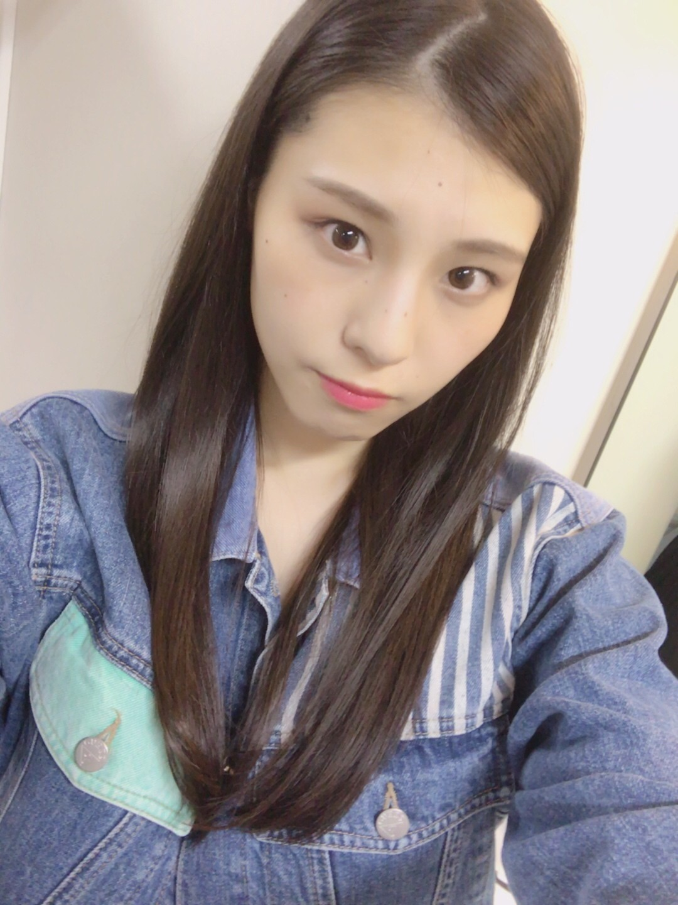
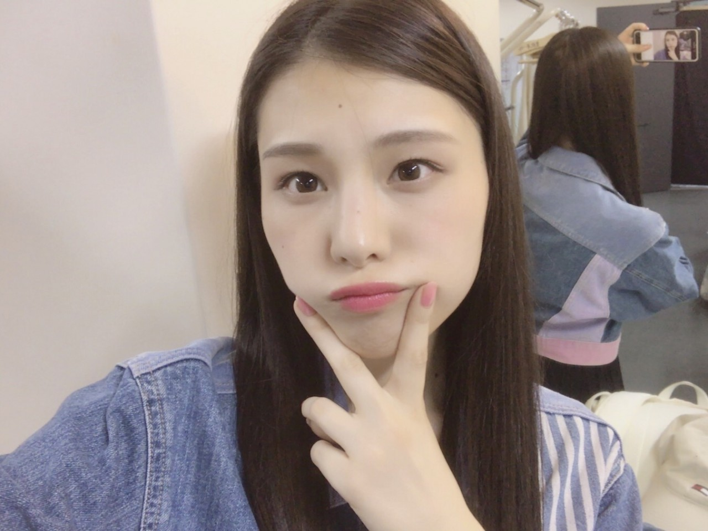
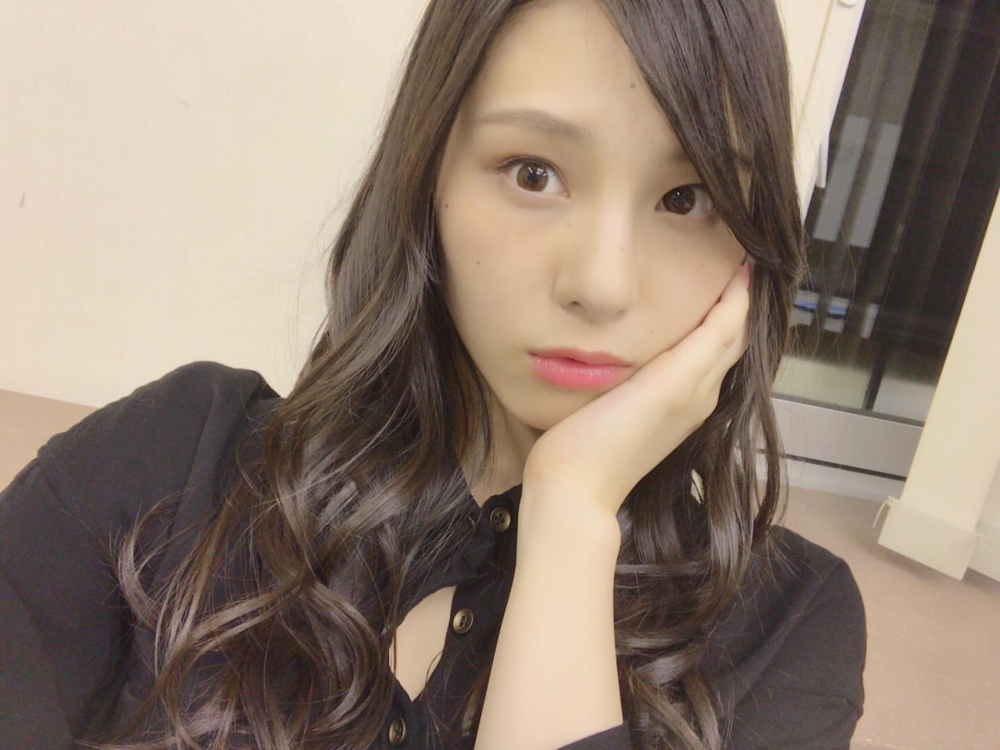
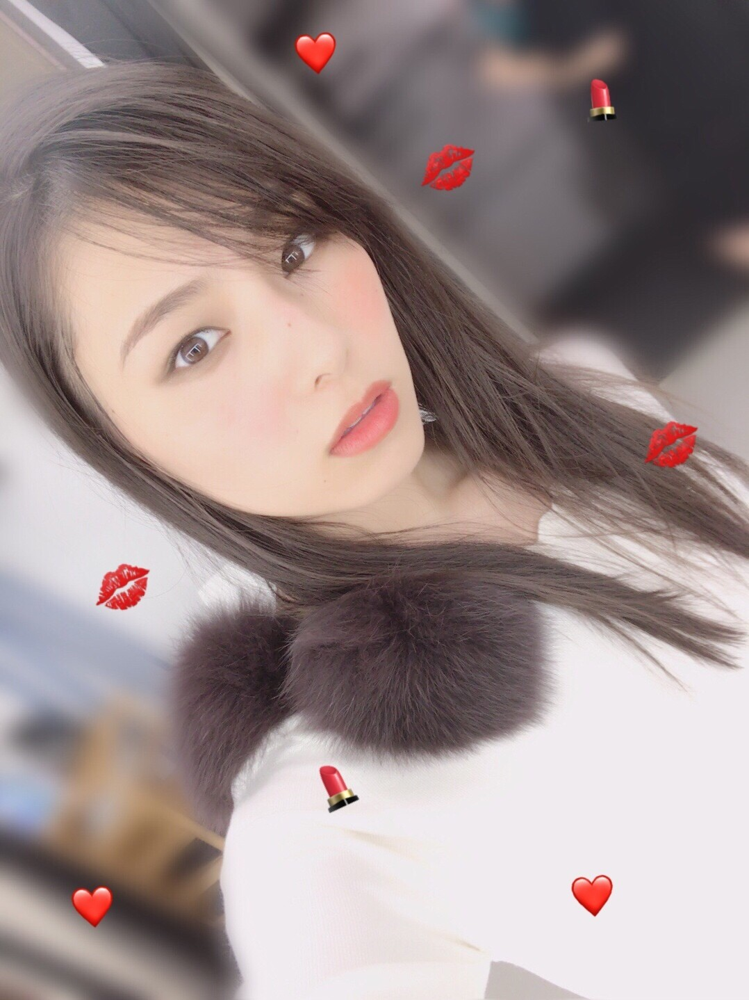

| 2017/10 23 Mon | キレイゴト_(．．*)vol.208 |
みなさんこんばんは
相楽伊織です

アンダーライブ九州ツアー
終わりました！
大分から始まり
福岡三日間、鹿児島、宮崎と
九州全県では無かったものの
今年の全国ツアーで行けなかった九州に
こうして私たちが行けたことが
とても嬉しいです(^^)
長いようで、、
やっぱり長かったです(^^;
ひめかさんと日奈子が揃って
｢アンダー｣を歌ってるのを見た時
全国ツアーでは
日奈子が歌う時はずっと俯いてたから
見ていてすごく苦しかったけど
二人の振付を見て感動しました！
あと、今回のツアーで
自分の気持ちをちゃんと言葉に出来るって
凄いなぁと改めて思いました。
私は言わないんじゃなくて
伝え方を知らないし
考えて頭の中で文章にしてみても
言おうとした事が喉の奥で突っかかって
息ができなくなるんです。
だからそれを吐き出せるって
単純に尊敬します。
私にはきっと一生出来ないから。
そして
福岡三日目で発表されましたが、
アンダーアルバムが一月十日に発売になります！
それともう一つ発表された
アンダーライブ全国ツアー 近畿四国地方
急遽だったのでびっくりしました(*_*)
今度は19thのアンダーメンバーで頑張りますので
見に来てくれたら嬉しいです！


次は東京ドーム
まだまだ頑張らなきゃね。

今日発売のMAQUIAさんに
また出させて頂いております！！！
嬉しい限りです(;_;)(;_;)
毎回素敵なメイクで
撮影の度に興奮してます！！
KUBOKIさんのメイク術も
勉強になって普段のメイクに取り入れてみたり。。
メイクにもっともっと興味が湧いてきて
とっても好きなお仕事が出来て幸せです。
楽しかった～～
今回も3パターンのメイクが載ってます！
メイクの参考に是非チェックしてみて下さい♪
これからの季節は
重ためのメイクも出来るから嬉しい(*^^*)
私はメイクの中で
アイメイクが一番好き！！
新しく発売される秋冬のコスメも
早く買いたいものいっぱい(><)(><)
またメイクのお仕事が出来たらいいな♪
是非チェックしてみて下さい！
i o r i .

コメント(429)
2017/10/23 19:55